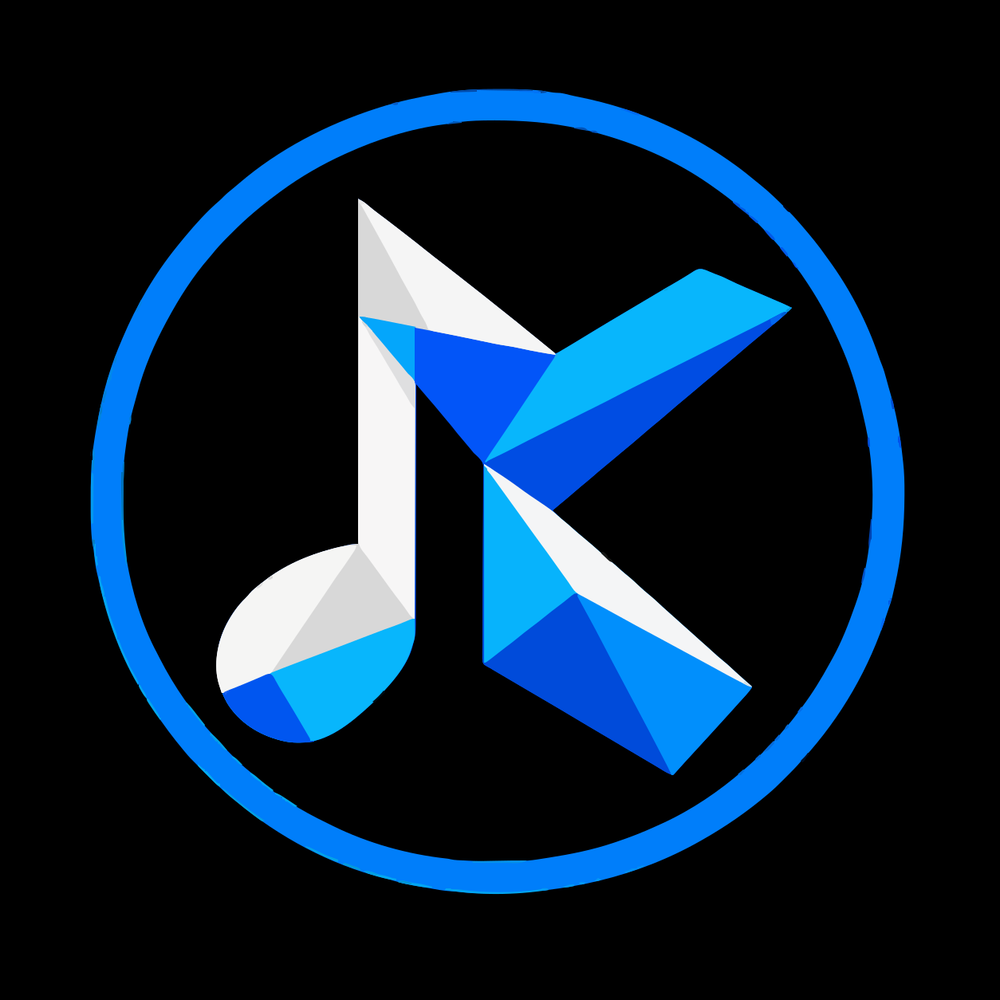
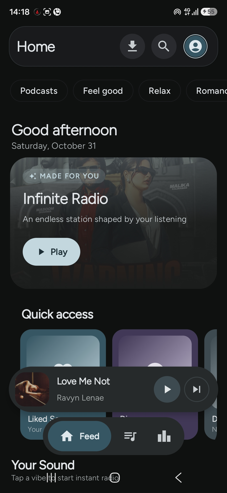
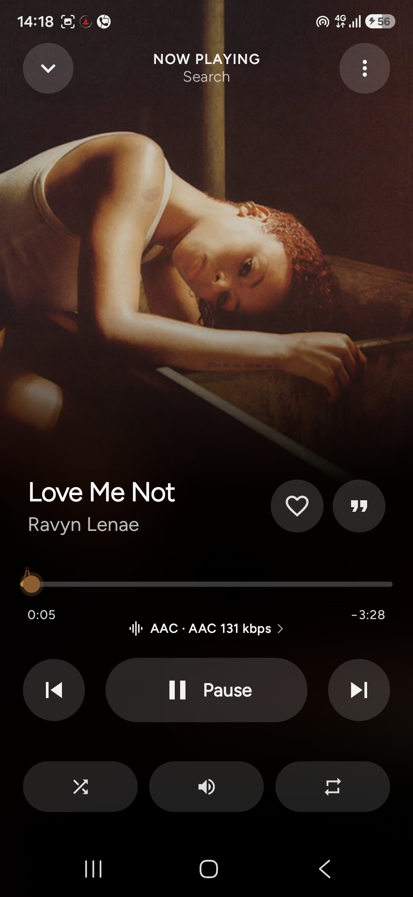
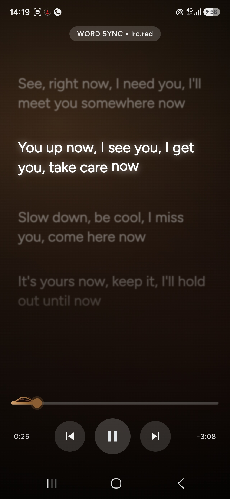
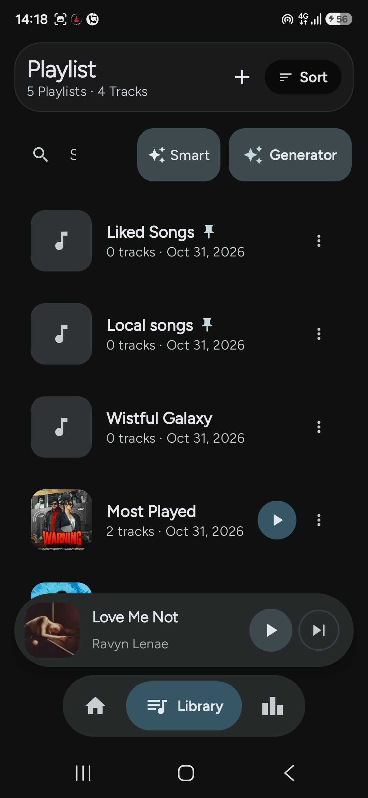
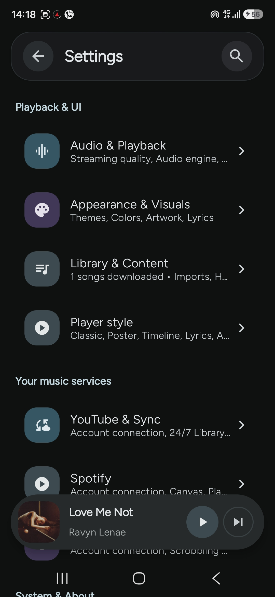
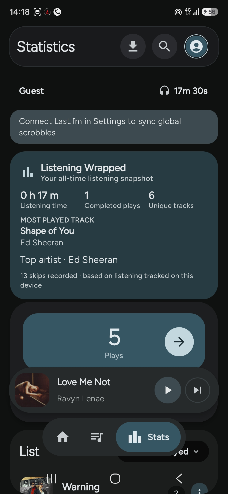

Follow every line.
Line- and word-synced karaoke lyrics, multiple providers, translation, romanisation, text sizing and timing offset.

KatMusic DownloadAn Android player for YouTube Music with word-synced lyrics, shareable lyric cards, a native audio engine and six ways to see what you play.



Specific features, not empty superlatives. This is what the app actually includes.
Line- and word-synced karaoke lyrics, multiple providers, translation, romanisation, text sizing and timing offset.
A native C++ engine built around Oboe, with parametric and graphic EQ, presets, AutoEQ profiles and supported direct-output paths.
Turn the words you love into a clean card with artwork, title and artist, then send it anywhere.
See lyric sharing →Songs, albums, artists, playlists, mixes, podcasts, local files and downloads.
Track progress, cancel or retry, and pause Wi-Fi-only downloads on mobile data.
Crossfade planning, BPM and phase analysis, and WSOLA time stretching.
Captured on Android. Swipe through the player, lyrics, library and settings.



Pick the expanded player that fits how you listen. Settings → Playback & UI → Player Style.
Compatibility varies by device. Some output modes depend on your hardware and Android version.
Universal for most devices. ARM64 for 64-bit ARM phones. Legacy for Android 7–9.
Open the downloaded package and follow Android's installation prompt.
Launch the app and configure account access or optional integrations in Settings.
Always the newest stable release, pulled live from the project's public GitHub. No third-party APK mirrors.
GPL-3.0 source
Could not load release details. The GitHub releases page still works.
No analytics or advertising-tracking SDK, according to the project documentation.
No. KatMusic is an independent, third-party Android project. It is not affiliated with, endorsed by or officially connected to Google or YouTube.
The current release offers Android 10+ packages and a legacy package for Android 7–9. Some features and media controls use alternatives on older Android versions.
The universal APK is the recommended option for most devices. The ARM64 package is for 64-bit ARM devices. Choose the legacy package only for Android 7–9.
KatMusic builds a card image from the track's artwork, title, artist and lyric lines. Because it is a normal image, you can send it from any app on your phone.
No. Output modes, supported codecs and bit-perfect behaviour depend on the Android device, DAC, audio route and operating-system limits.
The project README states that KatMusic does not bundle an analytics or advertising-tracking SDK. Network requests are made to services required by the features you use.
Yes. KatMusic is GPL-3.0 licensed. The source, issue tracker, contribution guide and release history are public on GitHub.